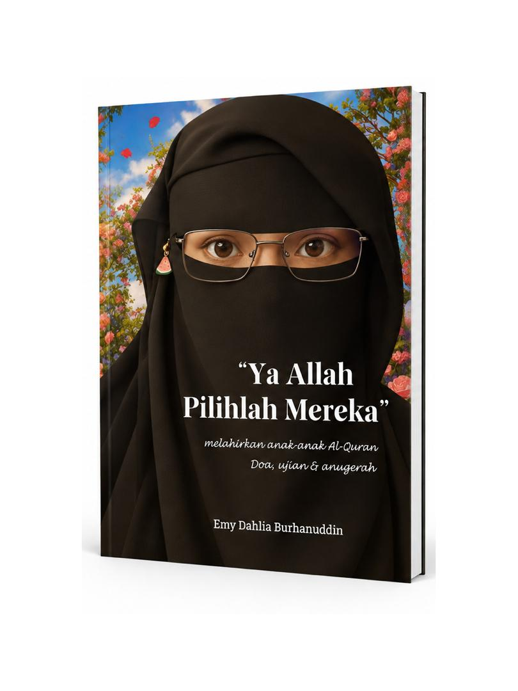
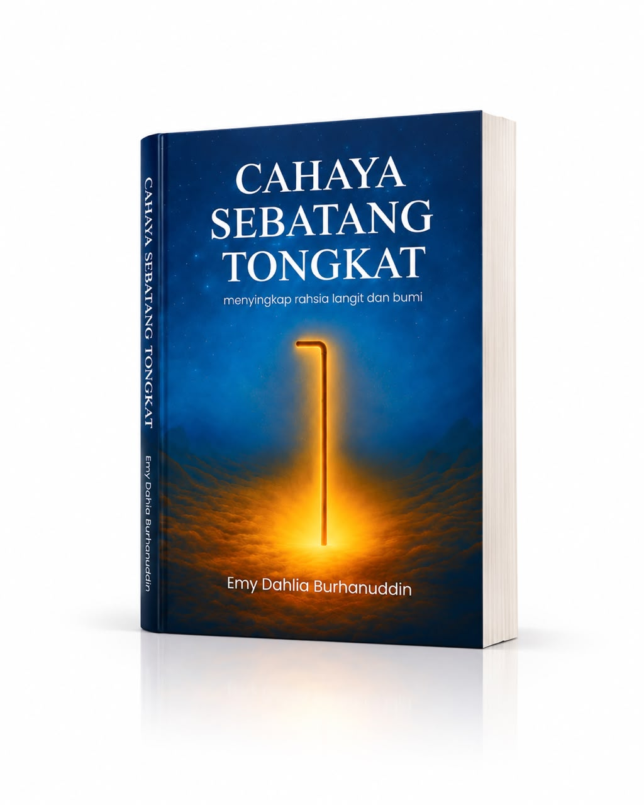
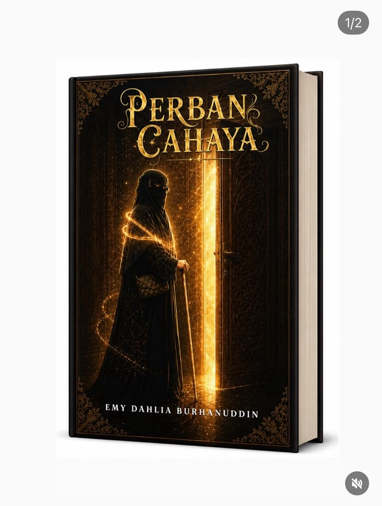
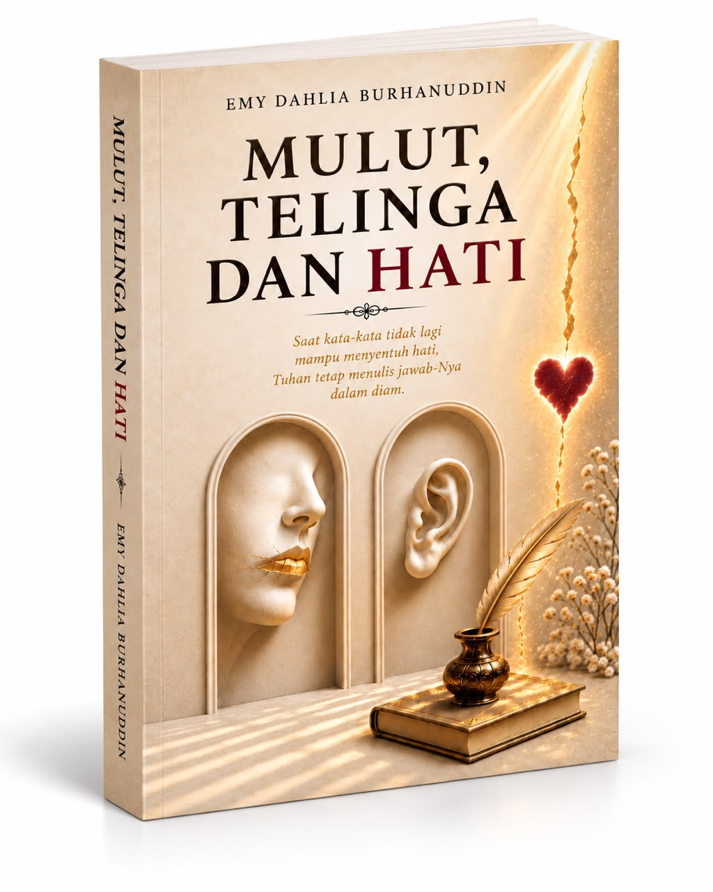

Faith
Rooted in faith
that never fades.
A journey of faith, hope & reflection
This is not just a story.
From trials came strength.
From tears came light.
From faith came perseverance.
And from His mercy, Siri Cahaya was born.
✧ A story of becoming, believing and beginning again.
Rooted in faith
that never fades.
Sharing hope
through every story.
Encouraging reflection
for a better tomorrow.
For anyone seeking light
in their journey.
“Light does not come from us. It comes from Allah.
Choose His Light.”
02 — Tentang: Kisah Saya
Saya menulis bukan sekadar untuk menceritakan kehidupan sendiri, tetapi untuk mencari makna di sebalik setiap perjalanan yang Allah izinkan berlaku.
Ada pengalaman yang kelihatan biasa ketika dilalui, namun setelah direnungi kembali, ia membuka lapisan makna yang tidak pernah saya sedari sebelumnya.
Daripada doa, ujian keluarga, pertemuan, kehilangan, pencarian dan kesyukuran, lahirlah Siri Cahaya. Sebuah perjalanan yang bermula sebagai kisah peribadi, tetapi akhirnya saya sedari bahawa rasa yang dilalui mungkin turut menjadi sebahagian daripada kisah orang lain.
Kerana setiap takdir mempunyai ceritanya, dan setiap cerita mempunyai ruang untuk kita mengambil ibrah.
Empat naskhah, empat perjalanan, satu amanah.
02 — The journey
Not every chapter is easy to write. Some are written through patience, some through tears, and some through the courage to begin again. Yet every step can bring us closer to the One who knows the whole story.
Explore the journey →03 — The bookshelf
Words and reflections for the chapters that shape us.

Siri Cahaya

Siri Cahaya

Siri Cahaya

Reflections
A gift that keeps giving
Wakaf Cahaya is an invitation to share beneficial reading and meaningful reminders with others. A book can travel further than we imagine, reaching a heart at just the right moment.
Ask about Wakaf Cahaya →Ruang berkarya
Setiap cerita bermula dengan satu idea. Pilih sokongan yang sesuai untuk membawa idea anda menjadi naskhah.
Bimbingan Penulis
Sesi bimbingan untuk menyusun idea, membina struktur, menguatkan watak dan menjadikan proses menulis lebih jelas serta terarah.
Ghost Writer
Perkhidmatan penulisan dari idea awal hingga manuskrip lengkap, dengan pendekatan yang menjaga suara, visi dan kerahsiaan anda.
A new chapter begins here
For book enquiries, collaboration, media and Wakaf Cahaya, send us a message. We would love to hear from you.